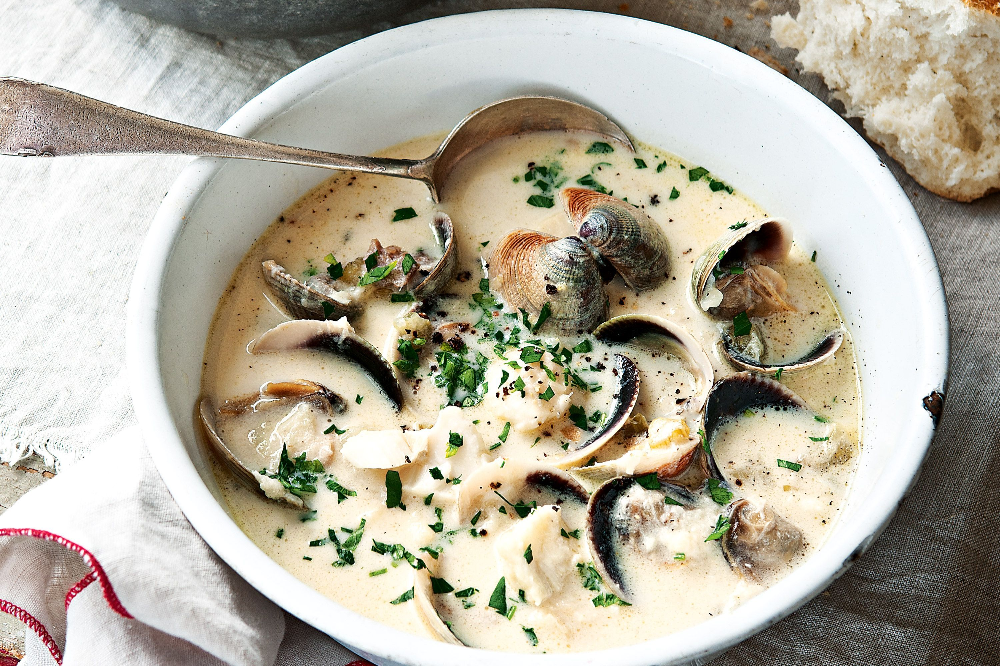
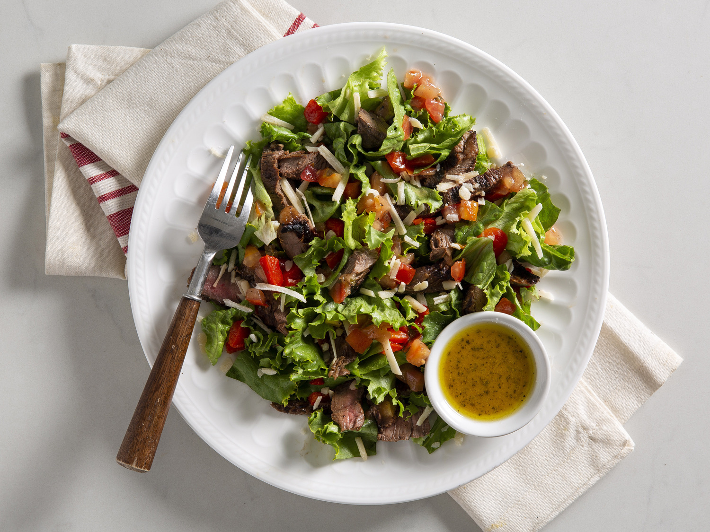

Hard Lunch Recipes
Recipe: Pumpkin Clam Chowder
| Price: | Time: |
|---|---|
| $ | 15-20 mins |

Image Source
Ingredients:
- 6 bacon strips chopped
- 1 medium fennel bulb, chopped, fronds reserved
- 1 medium onion
- 1/2 cup chardonnay or clam juice
- 5 bottles (8oz each) of clam juice divided
- 4 cups of cut 1/2 inch cube of either:
- Fresh pumpkin
- Butternet squash
- 2 medium potatos pelled and cut into small 1/2 inch cubes
- 1/3 cup all-purpose flour
- 2 cans (10oz each) whole baby clams, drained
- 1-1/2 cups heavy whipping cream
- Either:
- 1 tablespoon minced fresh tarragon
- 1 teaspoon dried tarragon
- 1/2 teaspoon salt
- 1/2 teaspoon pepper
Instructions:
- In an oven, cook bacon over medium heat until crisp
- Remove and place bacon on a paper towel to rest
- Cook and stir chopped fennel and onion in the bacon drippings over medium heat till tender (8-10 mins)
- Add chardonnay to pan and increase to medium-high heat
- Cook 1-2 minutes while stiring
- Add 4-1/2 cups of clam juice, the pumpkin and potatoes
- Once it comes to a boil, reduce the heat and let simmer with the lid uncovered until tender, stir occasionally (15-20 mins)
- Whisk flour and remaining 1/2 cup of clam juice and stir into pan
- Stir until boiling and until thickened (2-3 mins)
- Stir in clams, cream, tarragon, salt, and pepper
- Let simmer in heat (Do not allow to boil)
- Serve in bowl and top with fresh chopped fennel fronds and chopped bacon
- Dig in!
Video Tutorial:
Recipe: Open-Faced Pizza Burgers
| Price: | Time: |
|---|---|
| $ | 10 mins |

Image Source
Ingredients:
- 1-1/2 pounds ground beef
- 1/4 cup chopped onion
- 1 can (15 ounces) pizza sauce
- 1 can (4 ounces) mushroom stems and pieces, drained
- 1 tablespoon sugar
- 1/2 teaspoon dried oregano
- 6 hamburger buns, split and toasted
- 1-1/2 cups shredded part-skim mozzarella cheese
Instructions:
- In a large cast-iron or other heavy skillet, cook beef and onion over medium heat until the meat is no longer pink, 3-5 minutes, breaking into crumbles
- Drain. Stir in the pizza sauce, mushrooms, sugar and oregano; mix well
- Spoon onto buns; sprinkle with mozzarella cheese
- Place on ungreased baking sheets. Broil 4 in. from the heat until cheese is melted, 2 minutes
- Freeze option: Place the split and toasted buns on a baking sheet. Spoon the meat mixture onto buns; freeze for 1 hour. Transfer to freezer-safe airtight containers
- Dig in!
Video Tutorial:
Recipe: Grilled Steak Bruschetta Salad
| Price: | Time: |
|---|---|
| $ | 10-15 mins |

Image Source
Ingredients:
- 1/2 pound beef tenderloin steaks (1 inch thick)
- 1/4 teaspoon salt
- 1/8 teaspoon pepper
- 2 slices Italian bread (1/2 inch thick)
- 1 cup of either:
- Fresh arugula
- Fresh baby spinach
- 1/3 cup jarred or prepared bruschetta topping
- 1/3 cup blue cheese salad dressing
Instructions:
- Sprinkle steaks with salt and pepper
- Grill, covered, over medium heat until meat reaches desired doneness (for medium-rare, a thermometer should read 135°; medium, 140°; medium-well, 145°), 6-8 minutes on each side
- Let stand for 5 minutes
- Grill bread, covered, until toasted, 1-2 minutes on each side; place on salad plates
- Thinly slice steak; arrange over toast
- Top with arugula and bruschetta topping. Drizzle with dressing
- Dig in!